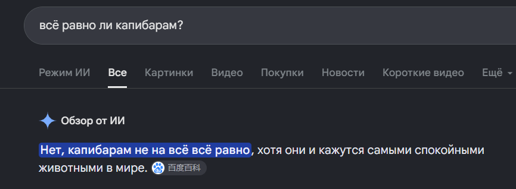
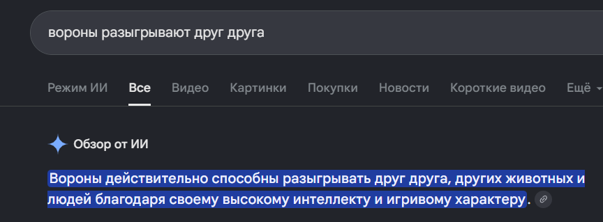

БЕББЕБЕБЕ
Навигация |
Это мой самый первый абзац текста на собственной крутой, невероятной веб-странице. Как я люблю кодФакт №1: Магия созиданияМне нравится, сидеть скрючевшись на табуретке и втыкать в редактор,. Факт №2: ИтогТы сразу видишь результат своей работу. И как только ты открываешь файл (если он не залагал где-то наполпути, что уже счастье), то перед тобой предстаёт новая страничка. Твоя, прекрасна. Ах, какая романтика Рандом факты о животныхО капибарахКапибарам не всё равно.  О воронахВороны настолько умны, что могут запоминать лица людей и устраивать розыгрыши друг другу.  |